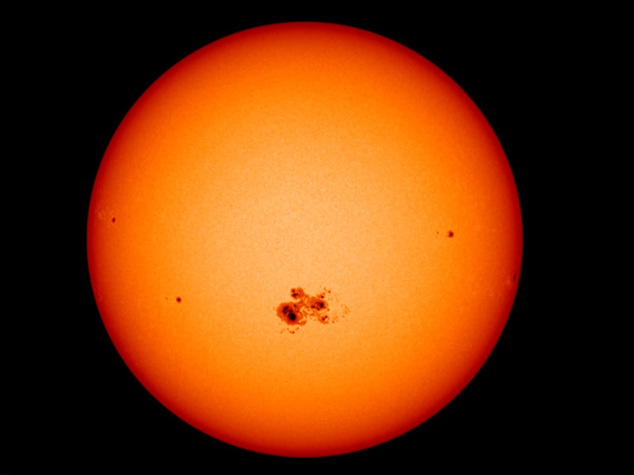

The Sun is a 4.5 billion-year-old yellow dwarf star – a hot glowing ball of hydrogen and helium – at the center of our solar system. It’s about 93 million miles (150 million kilometers) from Earth and it’s our solar system’s only star. Without the Sun’s energy, life as we know it could not exist on our home planet.
The Sun is the largest object in our solar system. Its diameter is about 865,000 miles (1.4 million kilometers). Its gravity holds the solar system together, keeping everything from the biggest planets to the smallest bits of debris in orbit around it.
The hottest part of the Sun is its core, where temperatures top 27 million °F (15 million °C). The part of the Sun we call its surface – the photosphere – is a relatively cool 10,000 °F (5,500 °C). In one of the Sun’s biggest mysteries, the Sun’s outer atmosphere, the corona, gets hotter the farther it stretches from the surface. The corona reaches up to 3.5 million °F (2 million °C) – much, much hotter than the photosphere.
Size and Distance
Our Sun is a medium-sized star with a radius of about 435,000 miles (700,000 kilometers). Many stars are much larger – but the Sun is far more massive than our home planet: it would take more than 330,000 Earths to match the mass of the Sun, and it would take 1.3 million Earths to fill the Sun's volume
Rotation and Sunspots
The Sun rotates on its axis as it revolves around the galaxy. Its spin has a tilt of 7.25 degrees with respect to the plane of the planets’ orbits. Since the Sun is not solid, different parts rotate at different rates. At the equator, the Sun spins around once about every 25 Earth days, but at its poles, the Sun rotates once on its axis every 36 Earth days.
The Sun also has an Orbit
وَهُوَ ٱلَّذِى خَلَقَ ٱلَّيْلَ وَٱلنَّهَارَ وَٱلشَّمْسَ وَٱلْقَمَرَ ۖ كُلٌّۭ فِى فَلَكٍۢ يَسْبَحُونَ ٣٣
And He is the one Who created the day and the night, the sun and the moon—each travelling in an orbit
Quran 21:33
Overall, this verse invites us to ponder upon the magnificence of Allah's creation. It demonstrates His supreme power and wisdom in establishing the day and night, as well as the celestial bodies like the sun and the moon, each following a specific course. It encourages us to reflect on the natural order and purpose in the universe, inspiring awe and reverence for the Creator.
Sunspots

They look like dark holes in the Sun, but they are actually areas that are slightly cooler than the surrounding photosphere. Sunspots are created where bits of the Sun's magnetic field poke out from the interior into the Sun's atmosphere. Lasting from days to months, sunspots range in size from 1,000 to 100,000 miles (1,600 to 160,900 kilometers). Credit: NASA's Scientific Visualization Studio/SDO